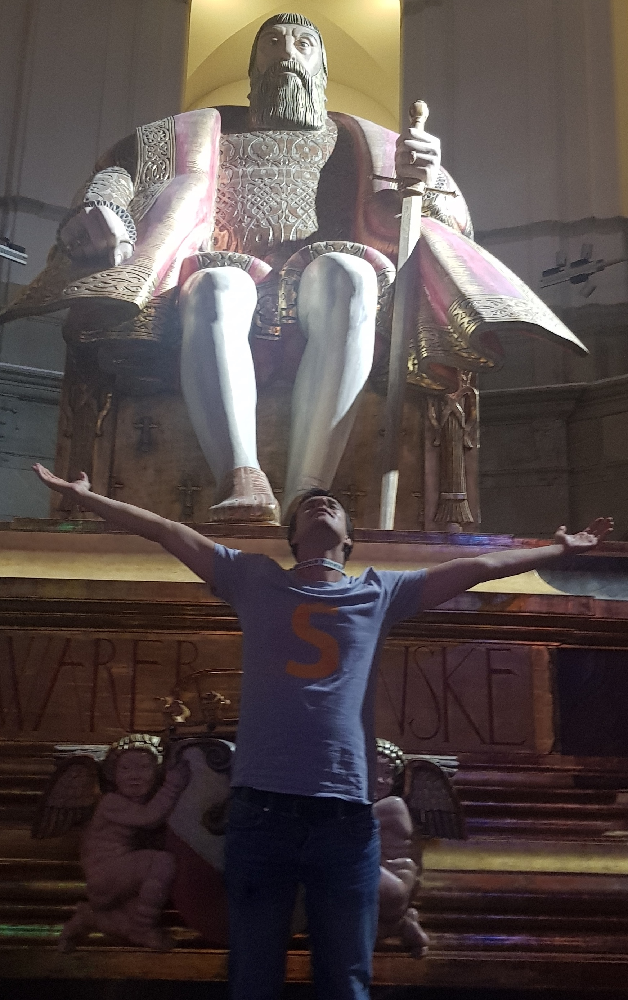

<!DOCTYPE html>
<html lang="en">
  <head>
    <meta charset="utf-8" />
    <meta name="viewport" content="width=device-width, initial-scale=1.0, maximum-scale=1.0, user-scalable=no" />

    <title>reveal-md</title>
    <link rel="stylesheet" href="./css/reveal.css" />
    <link rel="stylesheet" href="./css/theme/white.css" id="theme" />
    <link rel="stylesheet" href="./css/highlight/zenburn.css" />
    <link rel="stylesheet" href="./css/print/paper.css" type="text/css" media="print" />
    <link rel="stylesheet" href="./_assets/assets/custom.css" />

  </head>
  <body>
    <div class="reveal">
      <div class="slides"><section  data-markdown><script type="text/template">

Dom Teiml

Dec 2019
</script></section><section  data-markdown><script type="text/template">
In this presentation I'm selling 3 things:
- the team
- the problem
- the solution
</script></section><section  data-markdown><script type="text/template">
# Team 👫
</script></section><section  data-markdown><script type="text/template">
## Full-time

### Dom

<div class='two-columns'>
<div>

- My background is 25% math, 25% econ and 50% software engineering
- I taught math at universities in Europe & US, including UC Berkeley and Cornell
- I worked in/started pre-seed startups, unicorns and small businesses
- I travelled extensively in India, my hobbies are meditation, year-round cycling and sauna.

</div>
<div>
<figure>
  
  <figcaption>Wikipedia 2019</figcaption>
</figure>
</div>
</script></section><section  data-markdown><script type="text/template">
## Potentially full-time

| Name   | Superpower            |
| ------ | --------------------- |
| Anh    | Mathematician, Python |
| Dmitry | Front-end engineer    |
| Martin | Business dev          |
| Sam    | Formal methods        |
| Sultan | Full-stack engineer   |
</script></section><section  data-markdown><script type="text/template">
# Problem 😕
</script></section><section  data-markdown><script type="text/template">
- Current education system is very inflexible. If one applies to Oxford undergrad right now, they will begin studying in October 2021. That is *22 months* from now.
- It is *de facto* impossible to get credentials for informal education such as self-learning.
- Finding good materials/resources on the internet is difficult. We still lack an efficient aggregator for education content.
- Education in English is overpriced in Europe, and education *in genera*l is overpriced in US.
  
  and many many others.
</script></section><section  data-markdown><script type="text/template">
# Solution 😌
</script></section><section  data-markdown><script type="text/template">
- Our goal is to create an end-to-end education system for the 21st century.

- One that would be recognized by governments for purposes of taxes, immigration...
  - We're the first project in history with this aim.

- We also think the best way to bootstrap such a proj is with a B2C app.

- I will now describe the chronology of features (might change subject to user interviews & iteration).
</script></section><section  data-markdown><script type="text/template">
## Search engine for learning resources

- We'll start by developing a search engine for learning resources.
- Unlike Google, it will be richly customizable
- Unlike Udemy/Coursera, it will be not be platform-specific.
- It will include:
  - podcasts
  - Youtube playlists
  - documentaries/docuseries
  - MOOCs
  - books

  and many others.
</script></section><section  data-markdown><script type="text/template">
## Credentialing platform

- Currently universities bundle content with credentials.
  - Our aim is to modularize content (both offline & online) and centralize credentialing
- We'll build a platform where anyone can submit a work like essay, Github project or other
  - They get matched for a 1-hour recorded video
  - Others can rate how well they demonstrated understanding of multiple topics
- Our goal is to create a cheaper, more flexible, and less cheatable credentialization than the legacy system.
</script></section><section  data-markdown><script type="text/template">
## Questionbank

- As surprising as it sounds, there actually don't exist good tools for learning software engineering or the sciences.
- We'll build an offline-first, in-editor tool for learning & demonstrating knowledge of popular languages and libraries
- We'll also build a proof-checker to enable interactive math lessons for all skill-levels.
</script></section><section  data-markdown><script type="text/template">
## Offline courses

- Again, there doesn't exist an Uber for offline courses.
- At this stage we can leverage our traction to finally make this happen.
- The first partners will likely be existing courses
  - summer schools
  - language schools
  - math camps
- This will just set the stage to make *all* real-life teaching modular, flexible and accessible through Solvio
</script></section><section  data-markdown><script type="text/template">
## Hiring platform

- We can leverage the platform to build a better hiring platform.
- It is very hard to gauge candidates today:
  - Credentials differ around the world
  - Candidates often don't have any work to show
  - You can't filter for skills in a fine-grained manner - e.g. experience with certain frameworks
</script></section><section  data-markdown><script type="text/template">
## Monetization

- Due to the ambitions of this project, our main focus is on the execution - making a domain-specific search engine that would give better results than `Google`
- If this plan succeeds, a small capture margin of the value created will be huge absolute wise
- Examples where value can be captured:
  - Small yearly/lifetime fee for personalized searches
  - Commission from sale of offline courses
  - Income-share agreements
  - Commission from hiring
</script></section><section  data-markdown><script type="text/template">
## Seed round

- We're raising `$`500k.
- We plan to be remote-first, based in London, United Kingdom.
- We plan to spend `$`320k on salaries of the core team, and `$`150k on tagging & categorizing learning materials for the search engine.
- Assuming an annual salary of `$`40k (most compensation will be in stock for the seed team), this means 8 employees for 12 months.
- Apart from me, that means about 5 engineers, a designer and a CMO.
- This will allow us to build the search engine and the questionbank. This will be an interactive math proof checker and will revolutionize education of mathematics.
</script></section><section  data-markdown><script type="text/template">
<div class='left'>

# Demo

What else can I say for me to be able
<br>
to show you what we have, so far? 

</div></script></section></div>
    </div>

    <script src="./js/reveal.js"></script>

    <script>
      function extend() {
        var target = {};
        for (var i = 0; i < arguments.length; i++) {
          var source = arguments[i];
          for (var key in source) {
            if (source.hasOwnProperty(key)) {
              target[key] = source[key];
            }
          }
        }
        return target;
      }

      // Optional libraries used to extend on reveal.js
      var deps = [
        { src: './plugin/markdown/marked.js', condition: function() { return !!document.querySelector('[data-markdown]'); } },
        { src: './plugin/markdown/markdown.js', condition: function() { return !!document.querySelector('[data-markdown]'); } },
        { src: './plugin/highlight/highlight.js', async: true, callback: function() { hljs.initHighlightingOnLoad(); } },
        { src: './plugin/zoom-js/zoom.js', async: true },
        { src: './plugin/notes/notes.js', async: true },
        { src: './plugin/math/math.js', async: true }
      ];

      // default options to init reveal.js
      var defaultOptions = {
        controls: true,
        progress: true,
        history: true,
        center: true,
        transition: 'default', // none/fade/slide/convex/concave/zoom
        dependencies: deps
      };

      // options from URL query string
      var queryOptions = Reveal.getQueryHash() || {};

      var options = extend(defaultOptions, {}, queryOptions);
    </script>


    <script>
      Reveal.initialize(options);
    </script>
    <div style='position:fixed; bottom: 7.5px;'>
      
    </div>
  </body>
</html>